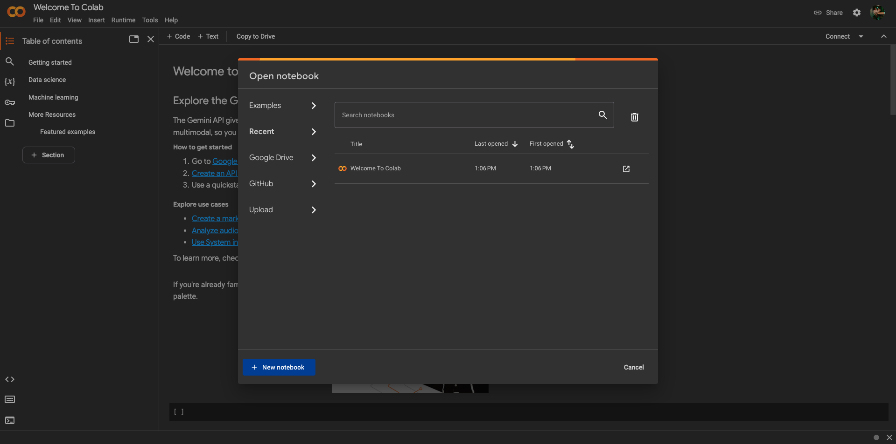
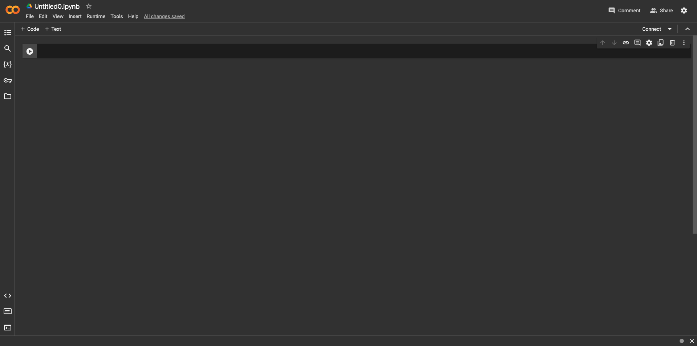
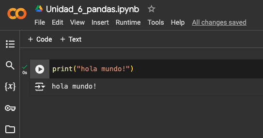
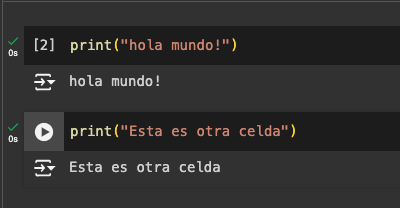
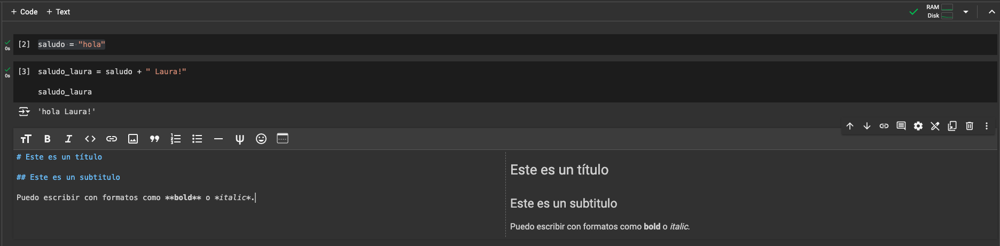
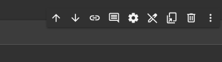

print("Hola, Mundo!")Hola, Mundo!Como en todas las disciplinas, la Ingeniería de Software y la Programación de Sistemas en general tienen un lenguaje técnico específico. La utilización de ciertos términos y el compartir de ciertos conceptos agiliza el diálogo y mejora la comprensión con los pares.
En este capítulo vamos a hacer una breve introducción de ciertos conceptos, ideas y modelos que van a permitirnos establecer acuerdos y manejar un lenguaje común.
Una computadora es un dispositivo físico de procesamiento de datos, con un propósito general. Todos los programas que escribiremos serán ejecutados (o corridos) en una computadora. Una computadora es capaz de procesar datos y obtener nueva información o resultados.
Toda computadora funciona con software y hardware. El software es el conjunto de herramientas abstractas (programas), y se le llama componente lógica del modelo computacional. El hardware es el componente físico del dispositivo. Básicamente, el software dice qué hacer, y el hardware lo hace.
La respuesta, sorprendentemente, es no: muchos de los algoritmos que se utilizan de forma computacional hoy en día fueron diseñados varias décadas atrás. Pero la implementación de un algoritmo depende del grado de avance del hardware y la tecnología disponible.
El sistema operativo es el programa encargado de administrar los recursos del sistema. Los recursos (como la memoria, por ejemplo) son disputados entre diferentes programas o procesos ejecutándose al mismo tiempo. El sistema operativo es el que decide cómo administrar y asignar los recursos disponibles.
Los sistemas operativos más comunes el día de hoy son: Windows, Linux, iOS, Android; por ejemplo.
Un algoritmo es una serie finita de pasos precisos para alcanzar un objetivo.
Ejemplo Un algoritmo puede ser una receta de cocina: tiene una serie finita de pasos (son ordenados, uno detrás de otro, finitos porque en algún momento deben terminar), que son precisos (porque tienen indicaciones de cuánto agregar de cada ingrediente, cómo incorporarlo a la preparación, etc) y están orientados en alcanzar un objetivo (obtener una comida en particular).
La forma en la que trabajaremos la creación de un algoritmo es siguiendo los siguientes pasos:
Estos cuatro pasos podrán iterarse (repetirse) la cantidad de veces que sean necesarios, para poder lograr acercarnos más a la solución en cada iteración.
Un programa es un algoritmo escrito en un lenguaje de programación.
Un lenguaje de programación es un protocolo de comunicación.
Un protocolo es un conjunto de normas consensuadas.
\(\implies\) Entonces, un lenguaje de programación es un conjunto de normas consensuadas, entre la persona y la máquina, para poder comunicarse.
Cuando logramos que un lenguaje pueda ser comprendido por el humano y por la máquina, tenemos una comunicación efectiva en donde podremos hacer programas y pedirle a la máquina que los ejecute.
Un buen ejemplo de cómo una computadora interpreta nuestras instrucciones sin pensar al respecto, sin tener sentido común y sin ambigüedades, es este video. La computadora lo único que hace es interpretar de forma explícita lo que nosotros le pedimos que haga.
Un lenguaje de programación tiene reglas estrictas que se deben respetar y no se admiten ambiguedades o sobreentendidos.
Un entorno de desarrollo es un conjunto de herramientas que nos permiten escribir, editar, compilar y ejecutar programas.
En la materia utilizaremos un entorno de desarrollo llamado Google Colab, que nos permite escribir código en un editor de texto, compilarlo y ejecutarlo en un mismo lugar de forma online. Pero existen muchos otros entornos de desarrollo, como por ejemplo Visual Studio Code, Eclipse, NetBeans, etc.
En este curso utilizaremos el lenguaje de programación Python. Python es un lenguaje de programación de propósito general, que se utiliza en muchos ámbitos de la industria y la academia.
Python es un lenguaje realmente fácil de aprender, con una curva de aprendizaje muy suave. Es un lenguaje de alto nivel, lo que significa que es un lenguaje que se asemeja mucho al lenguaje natural, y que no requiere de conocimientos de bajo nivel para poder utilizarlo.
El primer programa que se escribe en cualquier lenguaje de programación es el programa “Hola, Mundo!”. Este programa es un programa que imprime en pantalla el texto “Hola, Mundo!”.
En Python, el programa “Hola, Mundo!” se escribe de la siguiente forma:
print es una función que imprime en pantalla el texto que se le pasa entre paréntesis. En este caso, el texto que se le pasa como parámetro es "Hola, Mundo!". Al escribir las comillas dobles, estamos indicando que el texto que se encuentra entre ellas es un texto literal.
De la misma forma, podremos imprimir cualquier otro mensaje en pantalla, como por ejemplo:
Al igual que Rosita, al hacer nuestro primer ‘Hola, Mundo!’ nos convertimos en programadores. ¡Felicitaciones!
A partir de la próxima clase, comenzaremos a ver cómo escribir programas más complejos, que nos permitan resolver problemas más interesantes.
Para usar Google Colab, debemos ingresar a este link. Si es necesario, debemos crear una cuenta de Google.
Al abrir Google Colab por primera vez, vamos a ver lo siguiente:

Vamos entonces a hacer click en “New Notebook”, y se va a abrir un archivo nuevo, con extensión .ipynb (que es la extensión de un archivo del tipo IPython Notebook). Vamos a cambiarle el nombre de ‘Untitled0’ a ‘Unidad_1’ o el nombre que prefieran.

Con Colab vamos a poder correr nuestro código. Colab se divide en celdas individuales: cada celda es un bloque de código que se puede correr por separado. Para agregar una celda nueva, se hace click en el botón de “+ Code” que aparece en la parte superior izquierda de la celda. Para correr la celda, se hace click en el botón de “play” que aparece a la izquierda de la celda. El output (la salida) de la celda va a aparecer debajo de la misma.
Les recomendamos que cada ejercicio de la guía esté en una celda separada. A medida que avance la materia vamos a terminar de entender bien por qué.

Si tenemos varias celdas con código, podemos correrlas todas juntas haciendo click en “Runtime” o “Entorno de Ejecución” en el menú superior y luego en “Run all” (o “Ejecutar Todo”). Cada celda de código va a tener su propio output debajo de ella.

Así también como podemos agregar celdas de código, podemos agregar celdas de texto. Para eso, hacemos click en el botón de “+ Text” que aparece en la parte superior izquierda de la celda. Dentro podemos escribir texto con formato e incluso agregar imágenes.

Para reordenar, eliminar o copiar celdas, al seleccionar una celda aparece un menú a la derecha con distintos íconos. Podemos usar estas opciones para realizar estas distintas acciones.
